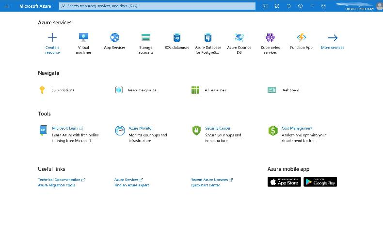

Interfaces gerenciador Azure.
A Azure oferece algumas interfaces para o usuário gerenciar seus recursos.
Todas as interfaces são unificadas acessando uma entrada com recursos seguros e centralizados.
As interfaces de gerenciamento são utilizadas para consultar, apagar e criar recursos como aplicação, VM, assinaturas, VNET, entre outros.
Como um Hub de serviços, o usuário consegue gerenciar recursos via terminal ou via web.
A ideia de disponibilizar várias interfaces de entrada, é dar opções de uso caso alguma entrada esteja com problema.
Tipos de interfaces.

Existem algumas interfaces de entrada que a Azure oferece para gerenciamento de recursos:
Portal Azure, Azure Powershell, Azure Cloud Shell e Azure Cli.
Portal Azure é um gerenciador de recursos web, onde só é necessário conectar
no portal e gerenciar recursos em uma interface gráfica.
Powershell é um terminal que possibilita via linha de comandos gerenciar os
recursos Azure.
Cloud Shell é similar ao uso do Powershell, a diferença é que o uso é feito
via web, conectando via Portal Azure e acessando a ferramenta.
Azure Cli também é um gerenciador de recursos via linha de comandos, mas com
comandos mais amigáveis que o Powershell.
Conclusão.
A Azure disponibiliza inúmeras ferramentas para gerenciar e analisar os recursos, desde interfaces web até a linha de comandos.